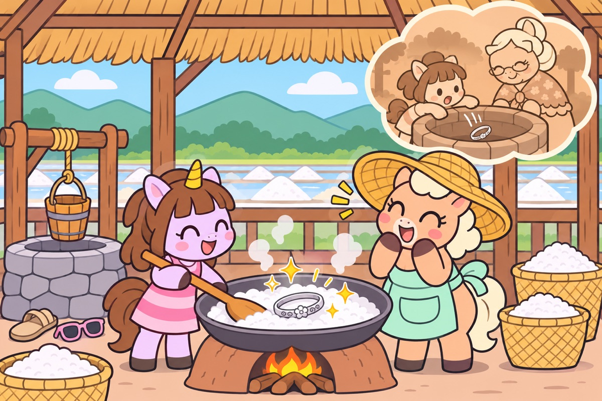

Grandma's Lost Bracelet
👆 Dip the bucket and see what comes up; scrape the salt to find what the well kept.
- 🪣silly finds in the bucket
- 🔥something glints under the brine
- ✨the paddle goes clink!
She learns: Boil the water away and what was in it stays: the salt, and the bracelet.
Silly: The bucket brings up Daddy's sunglasses, a sandal, a grumpy frog.
Why her: A mystery she solves herself, and a sparkly treasure at the end.
📖 Memory film: little Pa Kluea drops Grandma's bracelet down the well. Plop!
👵 "The well keeps what it loves. One day it gives it back."
📸 Pa Kluea wears it in the trip photo